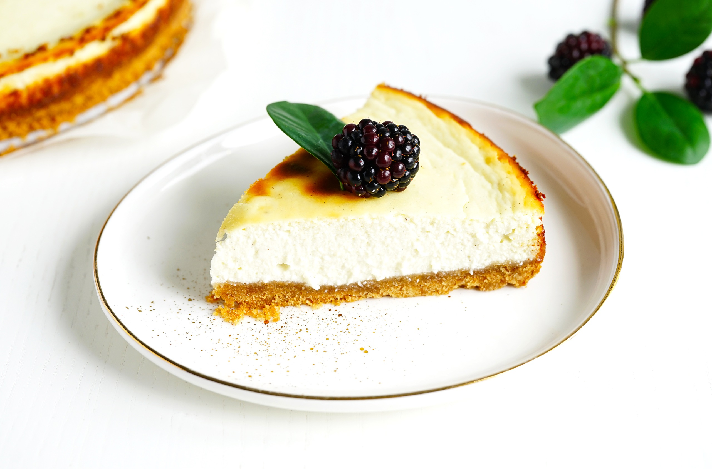

Класичний чизкейк
Порції: 8
Час підготовки: 20 хвилин
Час випікання: 1 година
Загальний час: 1 година 20 хвилин
Опис: Ніжний і смачний класичний чизкейк, ідеальний для будь-якої нагоди.
Інгредієнти
- 200 г печива для основи
- 100 г вершкового масла, розтопленого
- 500 г вершкового сиру
- 200 г цукру
- 3 яйця
- 200 мл сметани
- 1 ч.л. ванільного екстракту
Інструкція
- Розігрійте духовку до 160°C.
- Подрібніть печиво в дрібну крихту та змішайте з розтопленим вершковим маслом.
- Викладіть суміш у форму для випікання і ущільніть, створюючи основу. Запікайте 10 хвилин, потім дайте охолонути.
- Збийте вершковий сир з цукром до однорідності. Додайте по одному яйцю, збиваючи після кожного.
- Додайте сметану і ванільний екстракт, добре перемішайте.
- Вилийте сирну масу на основу. Випікайте 50-60 хвилин, поки середина чизкейку трохи не тремтітиме.
- Вимкніть духовку і залиште чизкейк охолоджуватись у ній протягом години, потім перемістіть у холодильник на 4 години або на ніч.
- Подавайте охолодженим, прикрасивши ягодами чи шоколадним соусом.